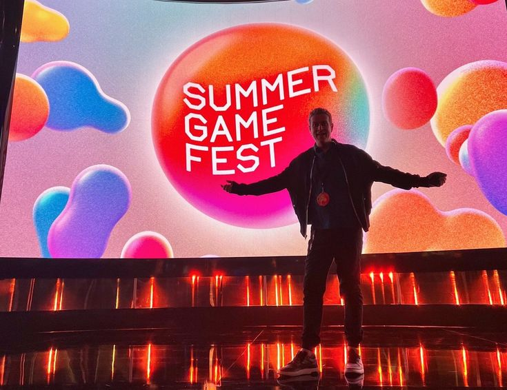
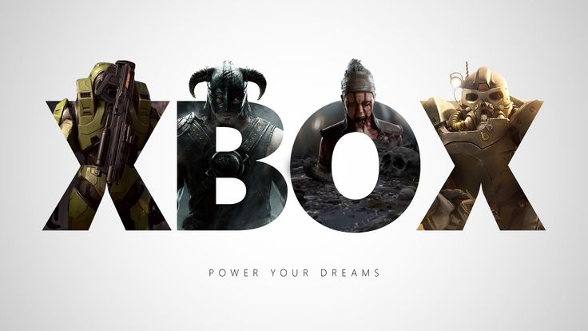
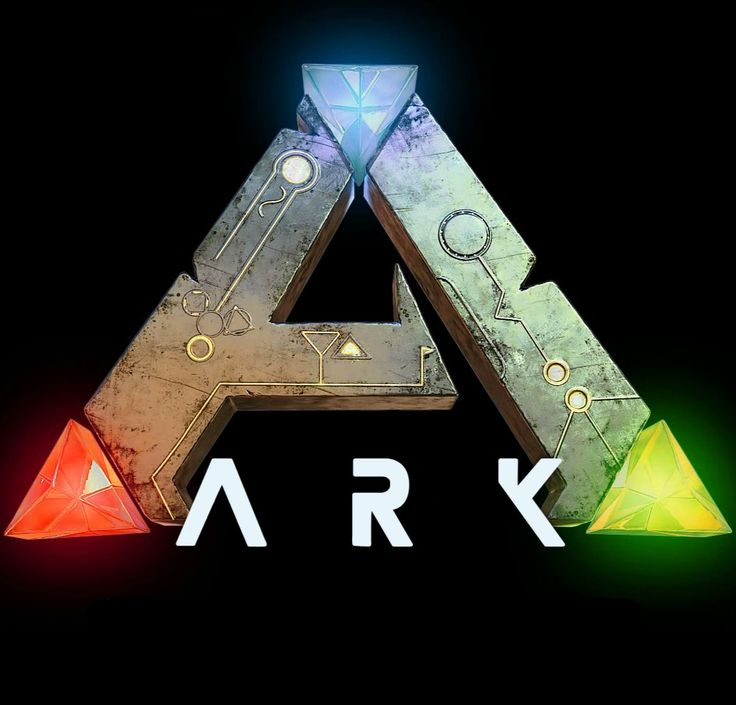
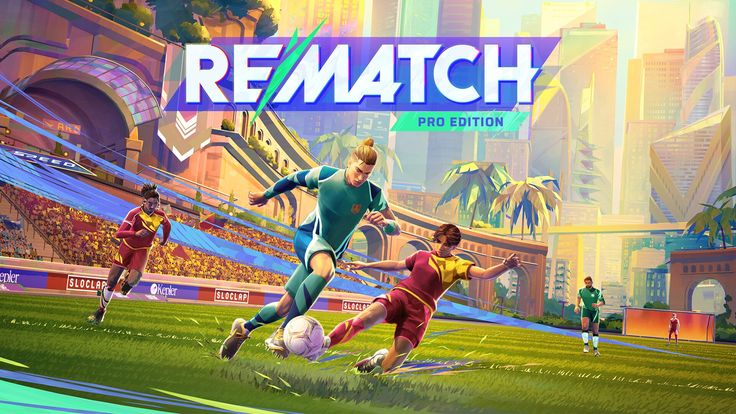

Summer Game Fest 2025 traz novidades bombásticas
24 de junho de 2025

O Summer Game Fest 2025 apresentou trailers e anúncios surpreendentes, como o novo Resident
Evil Requiem (lançamento em 27 de fevereiro de 2026), Deadpool VR, atualizaçõesde Death Stranding 2: On the
Beach e Dune Awakening, além do crossover Hatsune Miku x Sonic the Hedgehog
Leia mais
Novos títulos chegam por streaming no Game Pass
24 de junho de 2025

A segunda leva de junho no Xbox/Game Pass trouxe várias novidades: Rematch,
Warcraft I & II Remastered, Warcraft III Reforged, e Call of Duty: WWII, entre outros lançamentos,
já disponíveis para os assinantes
Leia mais
Rematch — uma revolução no futebol virtual
24 de junho de 2025

Desenvolvido pelo time responsável por Sifu, Rematch foi lançado em 19
de junho de 2025 para PS5, Windows e Xbox. O jogo foca no controle de um único
jogador dentro de partidas 5v5, sem offside ou faltas. Na estreia, conquistou mais
de 1 milhão de jogadores — embora tenha atrasado o multiplayer cross‑play, prometendo
implementá-lo em breve
Leia mais
ARK: Survival Evolved faz 10 anos e dispara vendas
24 de junho de 2025

No mês do seu décimo aniversário, ARK: Survival Evolved teve um aumento de
impressionantes +3.022 % nas vendas diárias durante promoção na Steam, com pico
de 65.885 jogadores simultâneos. O próximo DLC, “Aquatica”, está prestes a ser lançado —
com marketing até no cinema de Como Treinar o Seu Dragão
Leia mais
Nintendo Switch 2 segue difícil de encontrar
24 de junho de 2025

Mesmo semanas após o lançamento, o Nintendo Switch 2 continua esgotado globalmente.
Restocks são raros e desaparecem em minutos, segundo Tom’s Guide e GamesRadar
Leia mais